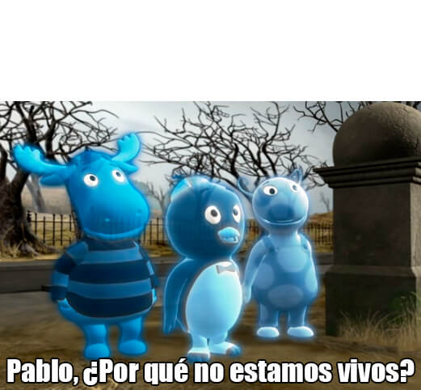

Epale, caraechola, soy Tony Stark y aunque este muelto quiero decirte que tienes una misión que completar, ¿estás listo para ella?
Bien, primero lo que tienes que hacer es prender tu play, ah cierto que no tienes GAFOOOOoooOOO, jakdajkdasjk. Le voy a decir a mi asistente que te compre 5 PS4, esperate nomas que reviva... ajdakdjka, pablo por que estamos muertos xd
Mira, caraemordiscoerata, te amo... Y sin mentirte, hoy, soñe algo muy feo y triste, era peor que una patada en los genitales ajkdajkdajksdska, decir "genitales" me recuerda a cuando ibamos a comprar algo para Elained y pregunte que si era mejor algo comestible o material jakdasjkdajk, el sueño trataba sobre un apocalipsis zombie en donde todos murieron menos yo... Y tu moriste salvandome, estabamos en una boveda, ya quedaba poca gente, me metiste en una boveda mientras venian miles de zombies atras de ti, ya te habian mordido, así que lo que hiciste fue decirme "Al menos salvate tú"... Y me lanzaste hacia la boveda, y cerraste la puerta... Escuché tus gritos durante un buen rato, mientras lloraba... Y la verdad en ese sueño vi muchas muertes, y perdi a muchas personas, hasta que solo quede yo, y la tuya fue la que más me dolio...
Esa primera vez que te conoci, no la recordaba hasta que estoy escribiendo esto, la verdad xd... Pero, cuando te conoci, dije, este chico... esta bien pendejo jakdajsk, y también pense... Nah, no pense nada, solo estoy diciendo cosas como si estuviera en una pelicula, y la verdad es que no lo estamos, ni nunca lo estaremos, no estamos en la tipica pelicula en donde todo esta bien... Todos tenemos problemas, cuando estuvimos en la estación del metro, aquel dia, ya sabes, no el de que te le declaraste a Ariyuri, si no más bien el de cuando golpeaste un muro de concreto de 3 metros... Así es la vida, no es como una pelicula, hay muchos días como ese, y habran muchos más... Pero no todo puede ser tristeza, ¿no?, hay que aprender a ser menos tristes, o eso dijiste...
Probablemente te estas preguntando que donde esta tu misión, pero esperate muchacho, no todo esta a la vuelta de la esquina, tienes que aprender eso... Así que escuchame, no estoy hablando de lo que hiciste en tu vida, o lo que has hecho, o lo mucho que hemos vivido, no, estoy hablando de un legado, estoy hablando de como me dijiste aquel dia que era una aldea y tu eras el escudo, estoy hablando de como le enseñaste a vivir a una persona, estoy hablando de que le enseñaste a vivir a una persona en tan solo un año... Como te dije, se puede vivir una vida en un año... Por que yo lo hice, aprendí sobre la vida, aprendí que no todos son malos, y que no todos quieren hacerme daño, y que tengo que vivir como si este día fuera el ultimo, tal y como tu me enseñaste... Creo que por eso no estamos vivos, ¿no pablo?, pero, al menos vivimos la mejor vida del mundo...
Y creo que de eso se trata, parte del viaje es su final, pero no importa el final, solo importa el viaje, lo que hagamos con nuestra vida, lo que hagamos en una montaña con tan solo unos amigos y una camisa de japón, lo que hagamos en el cumpleaños de un chico rubio, y que le hagamos pasar la mejor noche de su vida, ayvale AJDKAJKDADJKAKJAJKDAJKDAKDSA, coño velda soy TONYSTALK, chamo que paso puej te fuiste del guión jakdjakdjkad...
Cuando soñe eso hoy, me demostro a mi mismo, el más grande miedo de mi subconciente, de quien soy en realidad, y es perderlos a todos, perder a los que me hicieron vivir la vida en un año... Perderte a ti, no estaría vivo salvo que hubiera una razón, pense eso mil veces, pero no funciono... Solo pensaba, que yo fui el que los mate a todos, solo pensaba en cada uno de los gritos que tuve que oir... Solo pensaba, en que, no podre verlos de nuevo, pero siento que estan ahí... Viendome, viendo al asesino en frente de sus ojos... Así que cuando encontre mi telefono en aquella camioneta antes del fin del mundo, me alegre mucho, aún tenia batería... Y solo puse algo que me haria correr de nuevo con ustedes, por que a pesar de ello, apesar de que todo el mundo se estaba desboronando, tu dijiste: "ChamOOooo EL GAaaaSSs, se me estan quemando las arePAaass"
Tomar riesgos sin pensar en ello, complicarse la vida sin pensar en ello, y ser tú mismo, es lo que te define, y es lo que importa... Eso es lo que quiero que hagas en esta misión, una simple cosa... ¿Así quieres que te recuerden?, ¿este es tu legado?, ¿quieres que te recuerden como el viejo anticuado que apenas y pudo tocar a su esposa por que tenia miedo de poder beberse una monster completa?, o, ¿quieres que te recuerden como el chico que vomito en un pote en su cumpleaños, que me tumbo la corneta jakdjka, que me enseño a jugar uno y me pregunto que por que tenia tantas cartas jakdjakda, el chico que jugo Crawl conmigo y con Armando y se hacia llamar el mejor, el chico que de vaina y me explota la casa haciendo arepas jakdjakjdka, no mentira matte eso nunca paso xd, pero creo que si recordaria algo así xd, el chico que se le declaro a una niña en el metro al lado de un charco e miao' y le dijo que no ajkdajkda, el chico que a su novia se le declaro en unas escaleras, el chico que tiene la más mala suerte del mundo?...
Lo que sea que estes haciendo ahorita, cagando, comiendo o cagando comiendo, ¿es el ultimo acto de el gran Javier Parker?... Esta es la llave del futuro, sé que algún dia tu lo descubriras, y cuando lo hagas, cambiaras el mundo... Cuando soñe hoy, pense, en que ese era el fin del camino que yo inicie... Nunca te permitas pensar eso, aún nada se termina, aún hay cosas que aprender, cosas que hacer, y personas a las que amar... El mundo seguira girando contigo o sin ti, pero si esta contigo, lograras hacer a esta persona, y a muchas otras personas, las personas más felices del mundo...
Cuando vi Kimetsu no Yaiba dije, que te parecias a él, y no te parecias por lo que piensas, si no por que apesar de su orgullo, y su terqueda, nunca abandona a nadie... Ese eres tú... Inosuke... Eres el mejor de nosotros, vas muy bien, solo no pares... Y esa es la misión, no pares... Todo es un salto de fé, nadie elige su envoltorio, solo puedes elegir quien eres, y si crees en ti, puedes saltar y sonreir mientras lo haces... Esa es la verdadera felicidad, seguir sonriendo apesar de tener mala suerte, seguir sonriendo a pesar de que tu vida esta tan jodida, seguir sonriendo mientras todo se desborona... Eres el hombre araña...
Y por eso, te encargo esta misión el día de tu cumpleaños, para que recuerdes, y nunca dejes de luchar, tatakae... Feliz cumpleaños, caraemango.